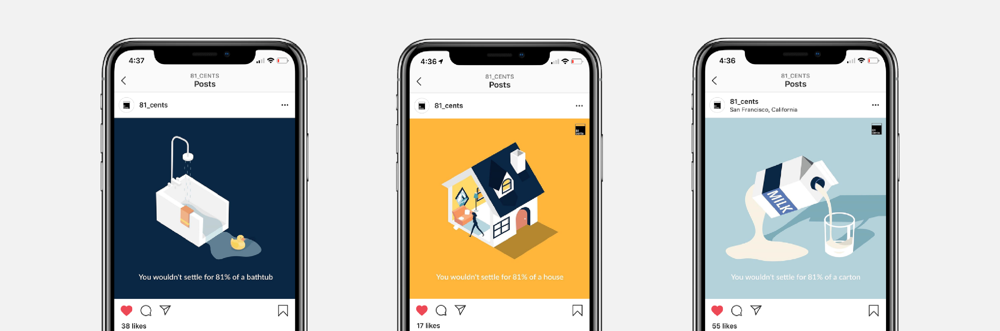
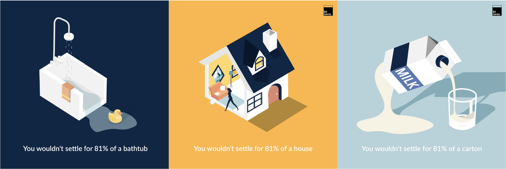

81cents
81cents is offers low-cost, success-based promotion, raise, and salary negotiation support, just for women and underrepresented groups.Role
Design Intern
Tools
Adobe IllustratorAdobe Draw
Squarespace
Timeline
~1 year, 2019 to 2020

My Role
Revised client reports & slide decks to better illustrate & synthesize data & information to over 200 clients & stakeholders.
Explored & illustrated visual concepts to increase presence on Instagram (+200) & LinkedIn (+700).
Redesigned brand, applying new assets & layouts for the site - 81cents.com.
Identified the current usability problems through user research & explored alternative user flows to enhance the customer check-out experience on the site.
Explored & illustrated visual concepts to increase presence on Instagram (+200) & LinkedIn (+700).
Redesigned brand, applying new assets & layouts for the site - 81cents.com.
Identified the current usability problems through user research & explored alternative user flows to enhance the customer check-out experience on the site.
Project Overview
Objective
Create a new set of social graphics, making aware the huge gender pay gap to our social platform audiences.
Solution
The concept we went with was 81% of something, having text below the image — “We wouldn’t accept 81% of ___ so why do we accept 81% of pay?” By posting jarring and quirky illustrations of an image sliced with only 81% remaining, audiences would see the detrimental effects of having an 81% out of 100% salary.
01 Ideation
When drafting the first concept's intital ideas, I explored alternative viewpoints to illustrate a sliced house, offering two and three dimensional perspectives.
To convey our concept, we went with three dimensional items since it showed the "emptiness" of having 81% out of the 100%. Adding the original branding colors and font, here's the final series.
To convey our concept, we went with three dimensional items since it showed the "emptiness" of having 81% out of the 100%. Adding the original branding colors and font, here's the final series.

02 Final Deliverables

Learnings and Takeaways
Being part of 81cents was my first internship and am grateful that I worked with a company that had the same values as me. I've learned greatly about gender and community disparities, early-stage startup culture, and negotiation — I even negotiated my initial offer with great teachings given by my team. I'd like to thank Jordan Sale, Lisa Shek, and Grace Lin for being such a supportive and strong group of women as I was in a explorative period of my career!